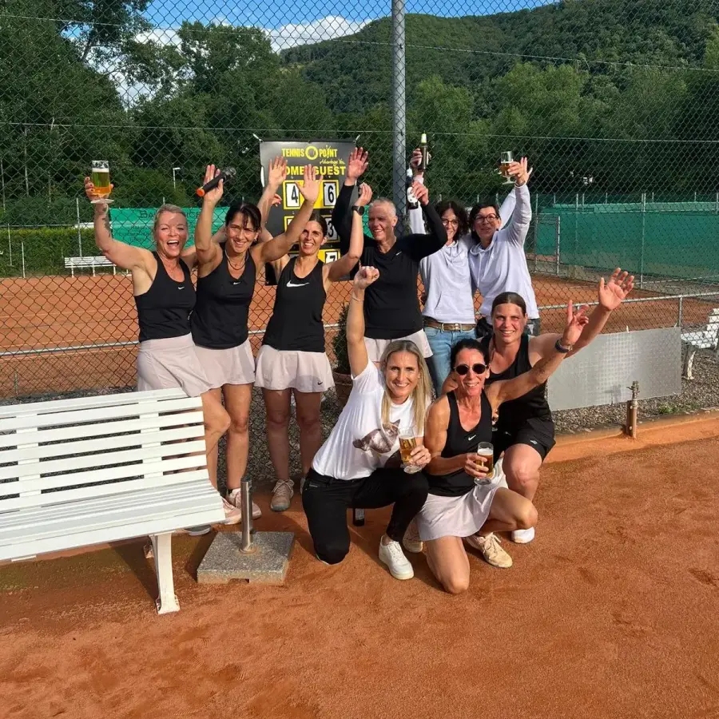

Damen 40
Oberliga
Mannschaften
Zwei Mannschaften, beide in Spielgemeinschaft mit Nachbarvereinen: die Damen 40 und die Damen 50.


Wir suchen immer Spielerinnen und Spieler, vom Kind bis zur Altersklasse 65.